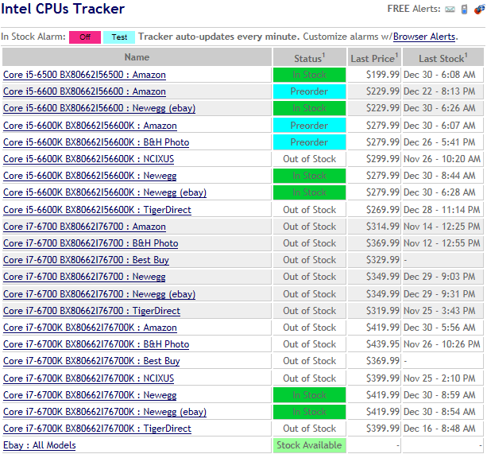

The types of cpus available now are extraordinary compared to the ones from almost 50 years ago. It is incredible we have come so far as far as computers and technology goes. The pros and cons of the cpu’s from today's time compared to back to 50 years ago are: Present pro’s: One pro is that the speed of the cpu has gotten a lot faster and the way it operates is way better than back when they were first invented. The cpu currently has more functions and faster operating speeds. Old pro’s: The old cpu did not have many pros but for that time stamp it was invented it was revolutionary for everyone.

Some cons for the present cpu are that some of them are overpriced and really not worth the price depending on what you're planning on doing. Another con is that the prices on the market for cpus go up and down a lot so you could get one of the best cpus in the market right now the I9-1090k which is around 1000$ CAD but the soon it could drop the price by 100$. Another con is that some cpus aren't meant for everything so before buying one do research one what its capabilities are and what it cant do. Also today now their is intel and AMD which are the best two cpu companies right now. Also the cpu today need enough power so you would need a certain wattage power supply(PSU).
The older cpus are a lot more slower and also they do not have the same capabilities and it took a lot less power to use. How to choose the right cpu would depend on the thing you would like to use your computer for, for example if you would like to game and stream on a budget I would do research on which one is good for it I personally say the I5-9600k with the RTX 2060 gpu and 16gb DDR4 RAM (temporary memory) and a 1 or 2 tb HDD(Hard drive) and a 80+ bronze 650 watt power supply (PSU). Each cpu has its pros and cons for example some are meant for coding and photo and video rendering and some are meant for gaming and some are good for all. I don't really know the future trend on a cpu other than its gonna keep evolving and getting faster and better and the prices will go up and drop on some.